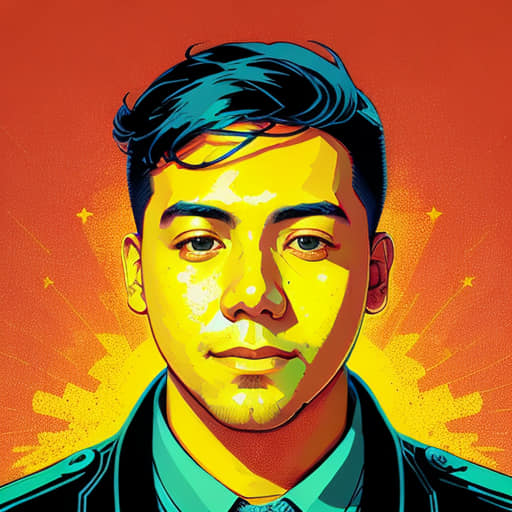

¡Hola! Me llamo Osmel Alvarez. Soy un apasionado de los MMORPG como World of Warcraft y Albion, disfruto explorando curiosidades sobre el universo y la naturaleza. También me encanta jugar League of Legends y Final Fantasy.
El universo es un lugar fascinante lleno de misterios. ¿Sabías que hay más estrellas en el universo que granos de arena en todas las playas de la Tierra?
Es una estrella tipo G2 que tiene más de 4.6 mil millones de años.
Se le conoce como el "Planeta Rojo" por su color característico.
Objetos cósmicos con una gravedad tan fuerte que ni la luz puede escapar de ellos.
Descubre a los campeones de League of Legends. Usa las flechas para navegar.